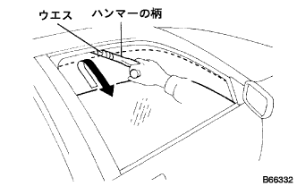

Power window system function inspection |
Basic function inspection
Turn on the ignitsu sions high.
When the switch for each seat of Multi -Plecs Netto Work Mastus Tsutsuchi is operated on the UP side, the door glass rises, and when operated on the Down side, it is inspected that it descends.
When the multi -kusunetsu tsutsuzuchi is operated on the UP side, it is inspected that the door glass rises, and when operated on the Down side, it descends.
When the window rock switch is lock, the illumination (LED) of the power window that is not the driver's seat turns off, and the door glass does not work.
Basic function inspection (driver's seat)
Turn on the ignitsu sions high.
If you operate the driver's seat or the switch for passenger seats on the Down side of the Multi -Plecsukuznetto Work Mastus Mustas Tutsch, it will operate Auto Down and check that the door glass will be fully opened.
If you operate the driver's seat or the switch for passenger seats on the UP side of the Multi -Plecs Netsu Work Mastus Mastus Titsuchi, it will operate Auto UP and check that the door glass will be fully closed.
While operating Auto Down, check that the door glass stops when the driver's seat or a passenger seat switch is operated on the UP side.(However, if you continue to operate on the up side or down side, it will be migrated to manual operation.)
Inspect that the door glass stops when the driver's or passenger switch is operated on the Down side while the AUTO UP is operating on the driver's seat or the passenger seat.(However, if you continue to operate on the up side or down side, it will be migrated to manual operation.)
Basic function inspection (other than the driver's seat)
Turn on the ignitsu sions high.
If you operate the multi -kusnetsu to work siutsch on the down side of the Down side, it will operate Auto Down and check that the door glass will be fully opened.
If you operate the multi -kusnetsu to work siutsch on the up side to the UP side, it will operate Auto UP and check that the door glass is fully closed.
Inspection that the door glass stops when the multi -plattskusunetsu tsutsuzuchi is operated on the UP while the auto down is running.(However, if you continue to operate on the up side or down side, it will be migrated to manual operation.)
Inspection that the door glass stops when the multi -pricksnett worksuit is operated on the Down side while the auto up is operated.(However, if you continue to operate on the up side or down side, it will be migrated to manual operation.)
After ON from ON to ON, check that the door glass can be operated in the Multi -Plecs Network Mastus Mustas and Windows Tsutsuchi in the passenger seat.In addition, it is inspected that if the driver's seat door is opened and closed once, it will not be possible to operate.
Check that after about 43 seconds, the door glass cannot be operated after about 43 seconds after ON.
When the driver's door is open from ON to ON, the driver's door is open, even if the door glass is closed or the driver's door is closed while the door glass is rising or downward.Inspect the continuation of Auto operation by closing or fully open.In addition, after the operation is completed, it is not possible to operate the power window.
Basic function inspection
Make the door glass fully open.
|  |
The one with a rag wrapped around the pattern of the hammer is installed near the fully closed.
When the door glass is fully closed with Auto Up or Manual UP, it is checked that the hammer pattern does not insert it, and it is DOWN and the descent is stopped by about 200 mm.
Inspect that the UP is not operated by the power window mastus and the power windows during the descent.
Illumination inspection
When the Ignitsushi Jong Suitsu is turned off → ON in the connector connection, check that the illumination (LED) of the switch is lit.
When the window rock switch is lock, it is inspected that the illumination (LED) of the power window switch other than the driver's seat turns off.
Illumination inspection
When the Ignitsushi Jong Suitsu is turned off → ON in the connector connection, check that the illumination (LED) of the switch is lit.
When the window rock switch of the multi -plattsukusunetto Work Mastas Tsutsuchi is Lock, the illumination (LED) of the power window switch in each seat is checked.